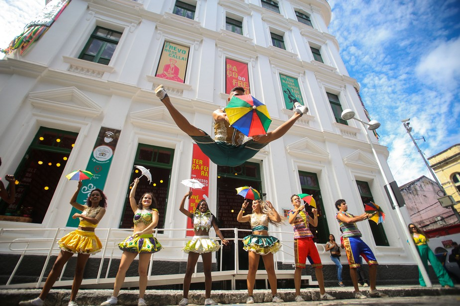
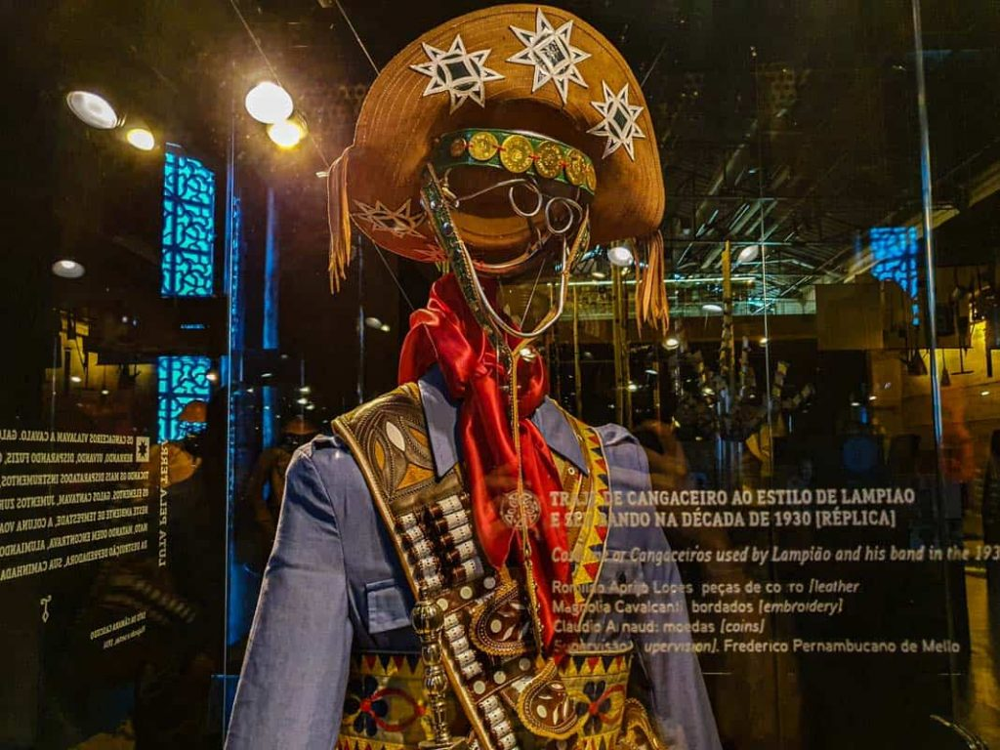

Paço do Frevo

O Paço do Frevo é um espaço cultural dedicado à difusão, pesquisa, lazer
e formação nas áreas da dança e música do frevo localizado na cidade do
Recife, capital de Pernambuco, Brasil. Surgiu através de uma parceria entre
a Prefeitura do Recife, a Fundação Roberto Marinho, o IPHAN e o Governo Federal
Cais do Sertão

Com recursos de tecnologia inovadores, automação e interatividade, além da leitura
generosa de cineastas, escritores, artesãos, artistas plásticos, artistas visuais e
músicos de todo o país, o Cais apresenta os fortes contrastes que marcam a vida nos
sertões nordestinos, proporcionando aos visitantes uma experiência de imersão nesse
universo.O espaço é um empreendimento de economia criativa e está localizado no
antigo Armazém 10 do Porto do Recife, vizinho ao Centro de Artesanato e ao Marco Zero
do Recife. A área total é de 7.500m², e os investimentos advêm de recursos do Ministério
da Cultura e do Governo de Pernambuco.